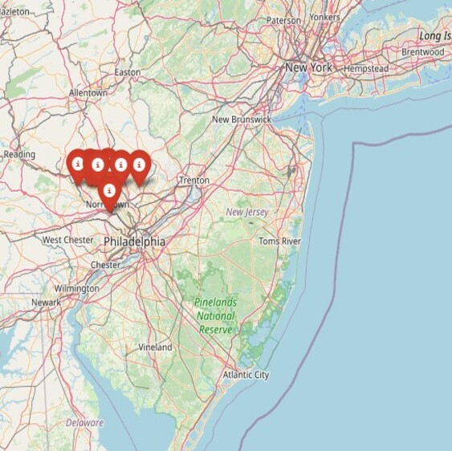
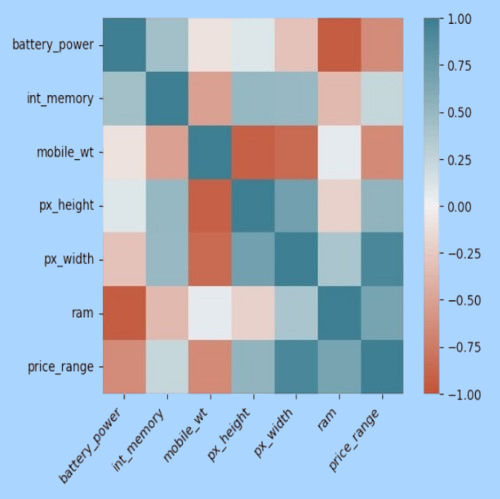

AI Engineering & Generative AI
LLMs, RAG, vision-language models, speech AI, prompt engineering, and multimodal generative pipelines.
AI ENGINEER / OPEN TO REMOTE ROLES
AI systems, MLOps & deployment
Building practical, reliable AI applications and backend systems.
Turning AI into reliable, real-world solutions.

Who I am
I’m an AI Engineer with a Master’s degree in Data Science and Intelligent Systems and experience building AI applications, backend services, and deployment pipelines. I enjoy turning AI technologies into practical, reliable solutions—from integrating LLMs to deploying and maintaining applications with Docker, Kubernetes, and AWS. I’m looking for opportunities in AI Engineering, Forward Deployed AI, and MLOps where I can contribute to real-world projects and continue growing as an engineer. Open to remote work and relocation.
Tools I use to build and ship AI
LLMs, RAG, vision-language models, speech AI, prompt engineering, and multimodal generative pipelines.
Python, FastAPI, REST APIs, WebSockets, microservices, asynchronous processing, and MongoDB.
AWS, Docker, Kubernetes, Ray Serve, GPU inference, autoscaling, CI/CD, and GitHub Actions.
PyTorch, Scikit-learn, Pandas, NumPy, OpenCV, video and audio processing, and ETL pipelines.
Building and deploying AI solutions
DeepSearch Labs · London (Remote) · February 2026 – Present
Building production generative AI systems on AWS EKS: video generation, real-time transcription, and conversational avatars.
Richedile AI Société
What I did

PROJECT 01 · DATA SCIENCE

PROJECT 02 · MACHINE LEARNING
PROJECT 03 · BIG DATA
What people think about me
“I’ve really enjoyed working with Meryem Ouafi on some exciting data science and big data projects. From Apache Giraph and NoSQL solutions to data mining and project management, Meryem’s enthusiasm, dedication, and teamwork have truly made every project better. Her insights and passion have made working together both productive and fun. Thank you, Meryem, for making this experience so rewarding.”Yousra Andoulla
Data Scientist
“Meryem is a passionate and dedicated data science student who shows a genuine love for learning and growing in her field. She’s excited to dive into new challenges, approaching each one with a positive mindset and a drive to succeed. Her collaborative spirit and natural ability to work well with others make her an invaluable team member, creating a supportive and enjoyable environment for everyone she works with.”Taha Oumoussa
Software Engineer at Oracle
Your testimonial will appear publicly on this portfolio as soon as you submit it.
Academic background
Mohammed Premier University · FPN
Mohammed Premier University · FSO
Mohammed Premier University · FSO
Arabic (mother tongue) · French · English
Clear communication · Problem solving · Team collaboration · Adaptability · Attention to detail · Continuous learning
How can you communicate?
Always feel free to reach out for collaborations or projects. Let's create something impactful together.
meryemouafi36@gmail.com